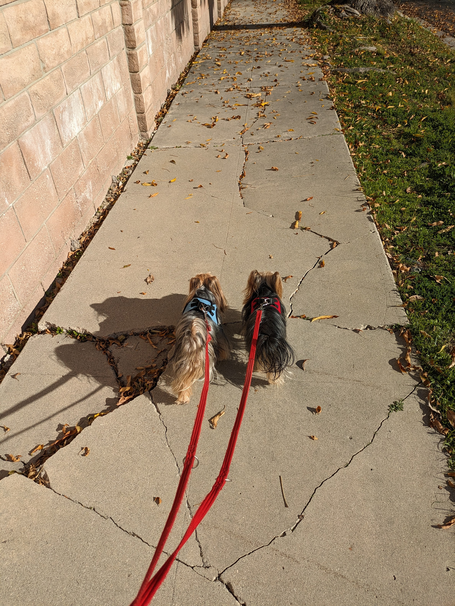

Lessons learned maintaining open source Python projects
by Bernat Gabor /
@gjbernat /
Bloomberg
https://gaborbernat.github.io/py-texas-24
Who am I?
- software engineer at Bloomberg (Data Technologies - Storage Platform team)
- based out of Los Angeles, USA - from Transylvania
Who am I?
- OSS contributor @ github/gaborbernat
- blog bernat.tech
-
member of the Python Packaging
Authority:
- virtualenv
- pipx
- build
-
maintainer of some popular OSS packages
- platformdirs, filelock
- tox, pyproject-api
- sphinx-autodoc-typehints, sphinx-argparse-cli
- pipdeptree
- pytest-env, pytest-print
- pyproject-fmt, tox-ini-fmt
üòé parent to two Yorkshire Terriers
Silky & Junior

Copyright 2024 Bernat Gabor All rights reserved
What is a maintainer?
Lessons learned maintaining open source Python projects
-
Per
dictionary.com
maintain
is defined as
- to keep in existence or continuance; preserve; retain
- to keep in an appropriate condition, operation, or force; keep unimpaired
What is a maintainer?
Lessons learned maintaining open source Python projects
-
Per
dictionary.com
maintain
is defined as
- to keep in existence or continuance; preserve; retain
- to keep in an appropriate condition, operation, or force; keep unimpaired
What is not a maintainer?
-
(in my humble opinion)
- adding new features
- fixing issues
that would be a contributor
however, you can fill both roles
What does a maintainer do?
Ensure package and information about it is discoverable
[project]
name = "tox"
urls.Documentation = "https://tox.wiki"
urls.Homepage = "https://tox.wiki"
urls."Release Notes" = "https://tox.wiki/en/latest/changelog.html"
urls.Source = "https://github.com/tox-dev/tox"
urls.Tracker = "https://github.com/tox-dev/tox/issues"
What does a maintainer do?
Ensure consumption and contributing is familiar
-
Follow the law of least surprises:
- Installable via pip (publish to PyPI), conda for bonus points
- Source code available via GitHub (Gitlab otherwise)
What does a maintainer do?
Set ground rules - code of conduct
What does a maintainer do?
Triage incoming bug reports
What does a maintainer do?
Use templates
What does a maintainer do?
Use templates
Communication
- is deceptively hard - see Ned Batchelder - People: The API User’s Guide
- we all have different communications styles
Copyright 2023 Ned Batchelder All rights reserved
Communication
-
is deceptively hard - see
Ned Batchelder - People: The API User’s Guide
- is even harder in written form because you lose context, attention
Copyright 2023 Ned Batchelder All rights reserved
Communication
In general
- be polite and patient
- give benefit of doubt, could be a different style of communication
-
refrain from tagging people (especially maintainers) upfront
- but is generally alright to tag if no response in a week
Copyright 2024 Bernat Gabor All rights reserved
Creating bug reports - Tips for users
Try creating easily reproducible reports
- Always start to see if there's an issue already open
- Docker image reproducing the issue
- A GitHub repository containing all the files I need to reproduce it
-
Detailed description of:
- Environment you run in (OS, Python version, packages installed)
- How you installed the package (PyPI or OS package manager)
- Full stacktrace of the error
- When in doubt, err on the side of including more info than less, but at least share what the template requires
What does a maintainer do?
Groom incoming feature requests
What does a maintainer do?
Reject feature requests
What does a maintainer do?
Reject feature requests
Think of the long-term good rather than short term gain
Copyright 2024 Bernat Gabor All rights reserved
Tips for users
How to file excellent feature requests
- Read the documentation to check if an alternative solution exists
- If in doubt, open a discussion to enquire how to solve problem X
- Indicate if you're willing to do the work
What does a maintainer do?
Review pull requests
What does a maintainer do?
Cut releases
What does a maintainer do?
Thank contributors upon merge and/or release
What does a maintainer do?
Ensures the project's architecture remains consistent
-
This is more of an art than exact science
- make sure the project has right separation of concerns
- when adding new code, make sure it lives in the appropriate section
- if it has a plugin system use it, rather than introduce a new mechanism to extend the code
Ensure the project has a release changelog
Where and how it's generated matters less
Ensure the project has a release changelog
Where and how it's generated matters less
What does a maintainer do?
Let people help you out
IMHO - keep the project in an appropriate condition, operational
-
Make it easy to contribute to the project
- That is keep the lights on and operational so other people can help out easily

Copyright 2024 Bernat Gabor All rights reserved
How to attract people to your projects
write documentation on how to contribute
How to attract people to your projects
write documentation on how to contribute
How to attract people to your projects
Ensure CI remains green
Run it daily on the main branch and action failure e-mails
How to attract people to your projects
Ensure CI remains green
Run it daily on main branch and action failure e-mails
How to attract people to your projects
Ensure CI remains fast
Quick feedback loop means they are more likely to stick with it and make sure it lands
How to attract people to your projects
Ensure CI remains fast
Quick feedback loop means they are more likely to stick with it and make sure it lands
How to attract people to your projects
Ensure your documentation build works and run it as part of the PR
readthedocs.org is great for this
How to attract people to your projects
Ensure your documentation build works and run it part of PR
readthedocs.org is great for this
How to attract people to your projects
Ensure your documentation build works and run it part of PR
readthedocs.org is great for this
What does a maintainer do?
Make it easy to do releases
- Release often (and small diffs)
- contributors can use their changes more quickly - more motivated to contribute again
-
Define a versioning policy (semantic versioning, calendar versioning)
- and a deprecation policy along with it
Coding standards
- Every change should have a unit test attached to it - users don't care but your future self or other maintainers will thank you for it
- Every change should have a changelog attached to it
Copyright 2024 Bernat Gabor All rights reserved
Code quality
-
Good code style is (sometimes) subjective - take the emotion out of it
- pre-commit
- ruff
-
A consistent architecture is better than a great one
Prioritize maintainers' opinions over contributors - Good PR (commit) title and body are rare, and that's alright - do squash merge and adjust before merge
Copyright 2024 Bernat Gabor All rights reserved
How to attract people to your projects
Create a community
- Your issue tracker is great async channel
- Create a sync channel (such as a Discord server)
- Advertise your project (X/Mastodon/Hacker News, Conference/meetups)
- Answer (some) questions on Stack Overflow
How to attract maintainers to your projects
- If people contribute a few times and their work is high quality, invite them to be co-maintainer
- Be (slightly) liberal on handing out these
-
Mentor them online if they are okay with that, or in-person if you know them in real life
- Have video calls with them, explain the architecture
- Give ample feedback in the first few weeks
- Involve them in decision-making
- Ask them to do the next release
- Make sure you're not in the hot path
What does a maintainer get
- looks good on your CV
- broadens your horizon - you meet new people and learn how to communicate with each
- mentoring experience (potentially)
- thanks from contributors upon merge and/or release
- opportunities to use new technologies, Python versions and libraries
- a handy source of topics for conference talks (either related to the project or your experience maintaining it)
- potentially get paid for it, in some way
Remember to get paid!
- Indirectly by your main employer by spending some work time on OSS
- GitHub Sponsors
- Tidelift - requires you to commit to fix discovered security vulnerabilities (thanks log4j)
- thanks.dev
Copyright 2024 Bernat Gabor All rights reserved
General
- Accept that it will never be done
- Be patient, users are bad at reading documentation
- Eat your own dog food - work off forks, make PRs for (almost) every change - work in public
How do you become a maintainer?
- Pick something you actively use on a semi-regular basis
- Read the documentation in detail
- Read a few issues and see if you can understand the issue (and where a fix in the code would be)
- Reach out to the current maintainer and see if your approach to solve it is right
- Rinse and repeat until you get the maintainer flag - lot of work, but won't take long in general
- Start with an easy issue (small bug, feature, documentation - bugs are often deceptive)
- It's okay if you decide it's not for you after a few weeks of doing this
Ensure you can keep doing it
-
Prioritize over anything else your:
- Mental health
- Physical health
Taking a month break or spending x% of your time on the project is better than quitting or burning out
Step away once you no longer enjoy it, either for a temporary or permanent break (if there are no other maintainers, make sure to communicate these breaks)
How long should you expect to keep doing it?
- As long as you (mostly) enjoy it
- As long as you keep using the tool or library in question

Copyright 2024 Bernat Gabor All rights reserved
Questions?
- Find me after at the conference!
thank you
Copyright 2024 Bernat Gabor All rights reserved